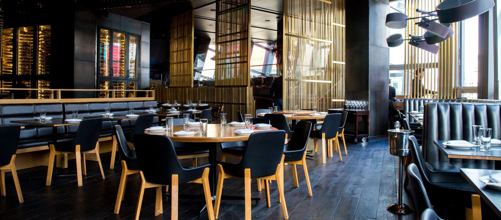

Bread Bistro, credem în puterea mâncării simple și autentice de a aduce oamenii împreună. Povestea noastră începe din copilărie, când Andrei, un brutar pasionat, și Elena, o creatoare de atmosferă talentată, visau să creeze un loc unde fiecare masă să fie o sărbătoare a gusturilor și tradițiilor locale
Bistroul aduce împreună oameni care apreciază gusturile autentice și atmosfera caldă. Fiecare fel de mâncare este centrat pe pâine artizanală, preparată cu grijă după rețete locale și reinterpretate cu un strop de creativitate.Cu o pasiune pentru rețete transmise din generație în generație și o atenție specială pentru detalii, am transformat acest vis în realitate. Meniul nostru este construit în jurul pâinii artizanale, coapte zilnic, și al ingredientelor de sezon, provenite de la mici producători locali
Atmosfera rustic-modernă, cu mese din lemn masiv, cărți de bucate vintage și lumini calde, creează un spațiu în care fiecare vizită se simte ca o întoarcere acasă. Fie că savurați un mic dejun relaxat, un prânz alături de prieteni sau o cină confortabilă în familie, la Bread Bistro veți descoperi mai mult decât o masă – veți trăi o experiență plină de suflet și gust.
Pornește într-o călătorie culinară în jurul lumii, fără să pleci din oraș! În fiecare seară tematică, descoperi meniuri speciale inspirate din bucătăriile tradiționale ale diferitelor țări și regiuni, pregătite cu ingrediente autentice și povești savuroase. Atmosfera este completată de muzică specifică și decoruri care aduc cultura locului mai aproape de tine. Rezervă-ți locul și trăiește experiența gusturilor globale alături de prieteni sau oameni noi, la BREad Bistro – locul unde pâinea aduce lumi diferite împreună!
Te invităm să descoperi preparate speciale și meniuri noi, create pentru a surprinde și încânta simțurile. Degustările sunt despre curiozitate și inspirație, o șansă de a experimenta combinații neașteptate și arome autentice. Într-un cadru primitor, vei putea împărtăși impresii alături de prieteni sau alți exploratori culinari, contribuind la selectarea noilor favorite ale meniului. Locurile sunt limitate – rezervă acum și lasă-te surprins de ceea ce urmează să devină noua ta experiență gastronomică preferată!

Atelierele noastre de panificație sunt gândite să îți ofere cunoștințele și încrederea necesare pentru a face pâini delicioase și alte produse de panificație direct în confortul casei tale. Sub îndrumarea lui Andrei, brutarul nostru pasionat, vei învăța tehnici esențiale, de la frământare la dospire și coacere, folosind rețete simple, dar pline de gust.Participă și transformă procesul de panificație într-o tradiție personală – un ritual al creativității și al savorii! Locurile sunt limitate, rezervă acum pentru o experiență practică și plină de inspirație.